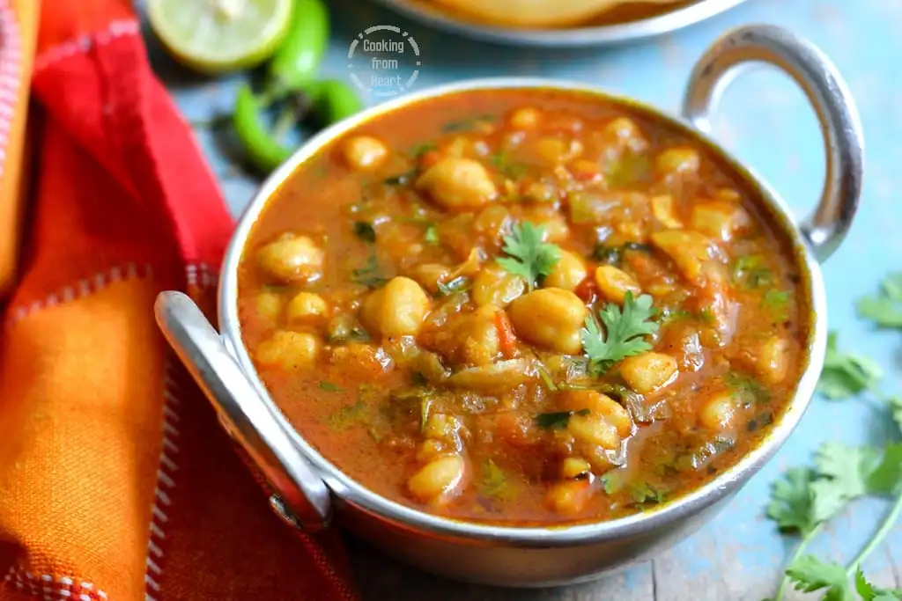

Punjabi Chole

Description
A spicy and tangy chickpea curry made with boiled chole (white chickpeas), bold masala base, and aromatic Indian spices. Best enjoyed with bhature or rice.
Ingredients
- White chickpeas (chole) – 1 cup
- Onion – 1 (finely chopped)
- Tomatoes – 2 (pureed)
- Ginger-garlic paste – 1 tbsp
- Oil – 2 tbsp
- Cumin seeds – 1 tsp
- Chole masala – 1 tsp
- Red chili powder – 1 tsp
- Turmeric – 1/2 tsp
- Coriander powder – 1 tsp
- Garam masala – 1/2 tsp
- Tea bag (optional, for dark color) – 1
- Salt – to taste
- Coriander leaves, lemon wedges – for garnish
Steps
- Soak chickpeas overnight.
- Pressure cook with salt and a tea bag for 5–6 whistles.
- Heat oil in a pan, add cumin seeds.
- Sauté onions till golden.
- Add ginger-garlic paste, cook for 30 seconds.
- Add tomato puree, chili powder, turmeric, coriander powder, salt.
- Cook till oil separates.
- Add boiled chole with 1 cup water.
- Simmer on low for 15–20 mins.
- Slightly mash some chole for thick gravy.
- Add garam masala and stir.
- Garnish with coriander and lemon.
- Serve with bhature, puri, or rice.
Home Page